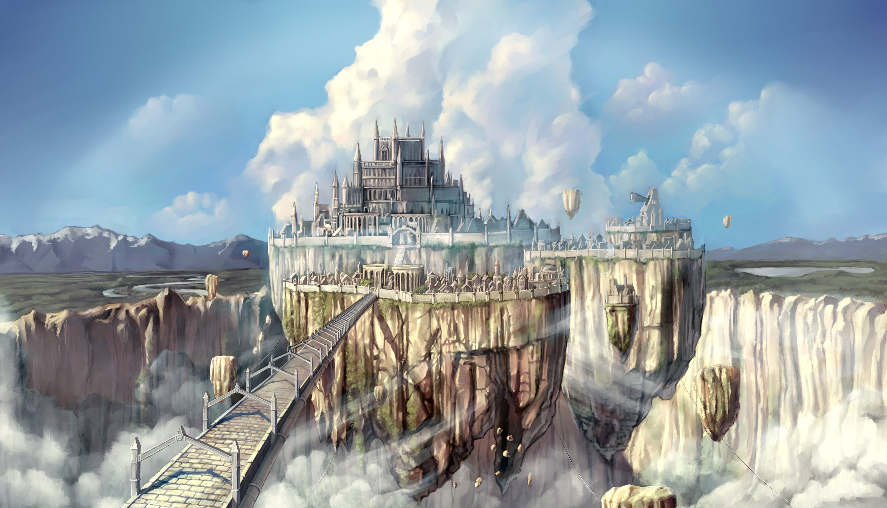
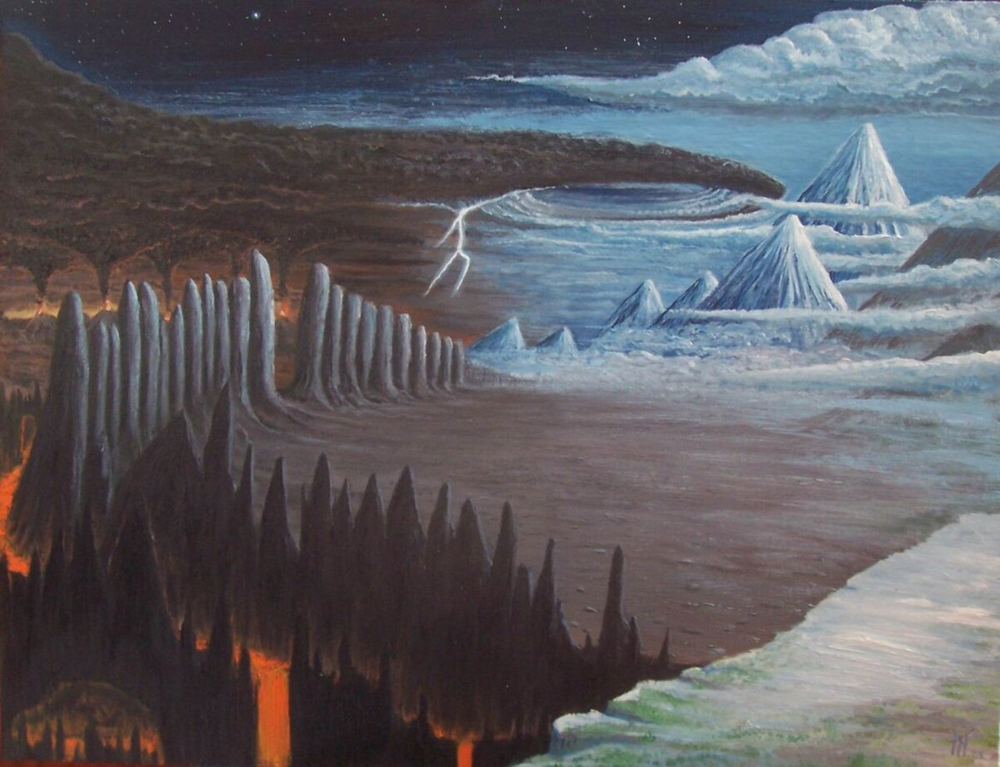
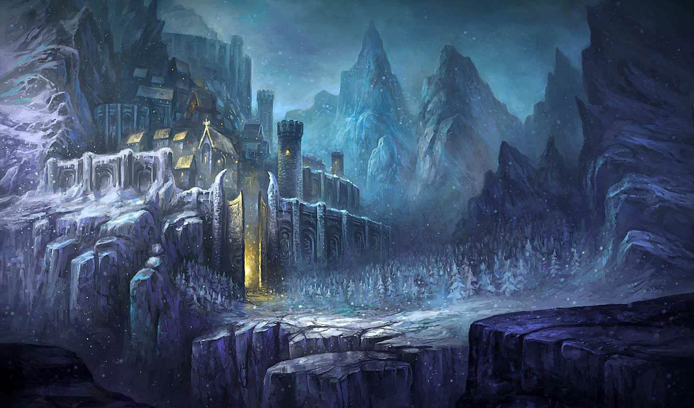

Скандинавские мифы
-
Асгард

Это страна, которую Один, Вилли и Ве сделали для себя, после чего Один населил ее
своими сыновьями (Асами), редкими жителями других миров (Нйорд, Фрейр и Фрейя из Ванов, Локи — из Великанов),
а также душами воинов, которые умерли с мечем в руках. Последние проживают в Валгалле и ждут последней битвы.
Асы — это боги, посылающие на Землю защиту для людей от великанов, также они следят за жизнью человечества. Одно из главных отличий религии викингов от других — существование отрицательных качеств у богов. Они уже не считаются непогрешимыми, как, например, бог у христиан, не являются абсолютно хорошими, как у китайцев, и несут (хотя и в будущем)
ответственность за свои злодеяния, в отличие от греческих олимпийцев. Асы и воюют, и убивают, и нарушают клятвы, но в целом они, конечно,
необходимы человечеству, без Асов люди не смогли бы сопротивляться Великанам. Вообще Асы удивительно похожи на
людей — они также смертны (если бы не волшебные яблоки, обитатели Асгарда уже давно бы сошли в небытие), также могут быть покалечены, они далеко не всемогущи, и так далее. Поэтому Скандинавские Саги здесь тоже выгодно отличаются от остальных мифологий —
боги приближенны к людям, так же могут любить и страдать, поэтому и ведут они себя по-человечески, в отличие от тех же Олимпийцев.
-
Муспельхейм и Нифльхейм

Эти названия примерно переводятся как Дом Огня и Дом Холода. Муспельхейм и Нифльхейм — изначальные миры. Когда не было остальных семи стран, на свете уже были царства огня и холода, и в них уже жили великаны — огненные и снежные.
Нифльхейм на самом деле имеет смысл гораздо больше, чем «царство снега». Этот мир воплощает собой все воспринимающее. Его энергетика — пассивная, Нифльхейм не в состоянии самостоятельно произвести на свет плоды, для этого ему не хватает активной энергии. Муспельхейм, наоборот, исполнен активной энергии, но она также не может принести плодов без базы. Муспельхейм похож на янь, Нифльхейм — на инь. Изначально разные, эти миры всегда находились в гармонии. Казалось бы, лед должен остудить пламя, а пламя — погасить лед. Но ничего подобного не случалось — обитатели этих миров никогда не воевали друг с другом, напротив, как и все великаны, были союзниками.
Интересно отметить, что Муспельхейм в каком-то смысле самый неизученный мир. Во всех остальных мирах побывали или люди, или Один, Отец Богов, или Тор-Громовержец. Но в Муспельхейм, охраняемый Суртом с огненным мечом, не заходил никто и никогда. Нифльхейм, напротив, более посещаемый, там не раз бывал Тор, и характер этого мира более-менее ясен. Снежные Великаны, как и Йотуны, нападают на Митгард и Асгард, но с меньшим энтузиазмом. Некоторые из них вообще предпочитают сидеть в Нифльхейме и не выходить далеко за пределы своего мира.
Результат взаимодействия этих миров — Творение Земли. Нифльхейм предоставил «материал» — глыбы льда, в которые огонь Муспельхейма вдохнул жизнь. Это еще раз подтверждает догадку о том, что Нифльхейм выступает с женской, а Муспельхейм — с мужской энергетикой. Стихии этих миров достаточно очевидны — Муспельхейм — Огонь, Нифльхейм — Вода. Следует отметить, что у викингов Воды как таковой нет, существует лишь Лед, но в классическом делении на стихии этот Лед полностью соответствует Воде.
-
Йотунхейм

Обитатели этого мира по хронологии вторые после Огненных и Снежных Великанов. После того, как глыбы льда Нифльхейма столкнулись с искрами жизни Муспельхейма, возник Великан Имир. Тогда еще не было твердой земли, и где находился Имир — несколько не проясненный вопрос, судя по всему, он, как и его дети и неожившие глыбы льда, находился в пустоте. Важно другое — Имир дал начало роду великанов и построил мир по своему желанию. Питались Имир и его потомки молоком коровы Аудумблы, которая облизывала ледяные глыбы. После того, как Один, Вилли и Ве — первые из Асов — убили Имира, весь его мир утонул в крови. Спаслась только пара великанов, потомки которых населили затем свою страну.
После убийства Имира из его тела были сделаны Земля и Небо, а также деревья, звезды, моря и океаны. Образовались Митгард и Йотунхейм, последний Асы специально подарили великанам.
Тролли, Ётуны или Инистые Великаны — воплощение силы, злобы, коварства и родоначальники всего плохого, что есть в этом мире. Их образ действий — грубая сила и коварство. Стихия этого мира — Земля. Почти все Тролли агрессивно настроены против людей и Асов, основные сражения идут именно с ними. Ётуны насылают на мир всевозможную непогоду, град, снег, шторма и снежные лавины. В то же время Йотуны — воплощение природных сил: они не знают разума, но, тем не менее, сильны.
Войдя в лабиринт, Тесей убил Минотавра, а затем вернулся обратно, используя веревку. Вместе с Ариадной и пленными афинскими детьми Тесей быстро сбежал. Оставив лабиринт позади, они бросились к кораблям и уплыли.
У истории не было счастливого конца. На острове Наксос Ариадну забрал у Тесея бог Дионисий. Встревоженный, Тесей отплыл обратно в Афины, но он забыл сменить паруса своих кораблей с черного на белый. Увидев черные паруса, Эгей, полагая, что его сын мертв, бросился в море. Впоследствии море было названо Эгейским морем.